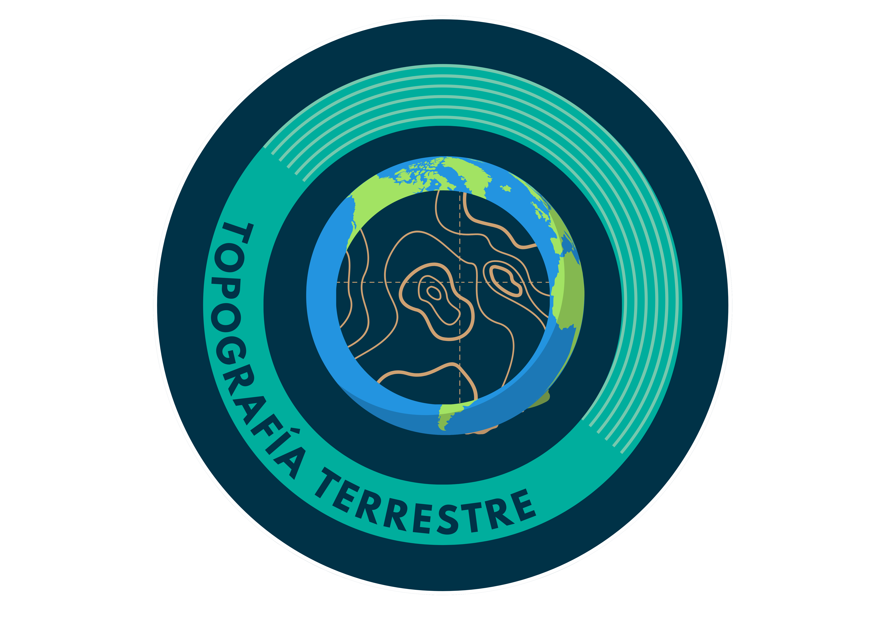

Con casi 9 km de altura, nos ayuda a entender cómo medimos y comparamos las montañas y el relieve de nuestro planeta.

Cooperation through Education in Science and Astronomy Research

Con casi 9 km de altura, nos ayuda a entender cómo medimos y comparamos las montañas y el relieve de nuestro planeta.